Further reading
- Tobar an Dualchais – Kist o Riches
- Recordings of Scottish folk tales, songs and stories, many in Gaelic and Scots.
- Dictionary of the Scots Language
- Meanings and histories of Scots words such as burn, haar and teind.
- Scottish Storytelling Centre
- Events, resources and tellers keeping Scotland’s oral tales alive.
- Popular Tales of the Western Highlands
- J. F. Campbell’s tales and traditions collected orally across the Highlands and Islands, free to read online.
- Am Faclair Beag
- Scottish Gaelic dictionary, useful for terms such as geas and cairn.
Photo credits
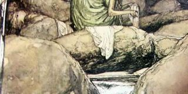
Washerwoman cover cardCredit unknown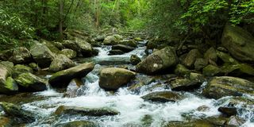
Washerwoman openingPhoto by Jeffrey Hamilton on Unsplash- Confront herCredit unknown
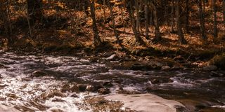
Ask nicelyCredit unknown- Ask about DaviePhoto by Liana S on Unsplash
 Take the jumperPhoto by Mark Stuckey on Unsplash
Take the jumperPhoto by Mark Stuckey on Unsplash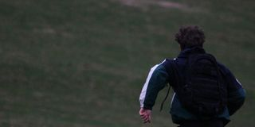
Leave the jumperPhoto by Mark Stuckey on Unsplash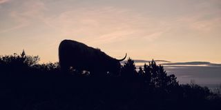
Ask about the jumperPhoto by Ashwini Chaudhary (Monty) on Unsplash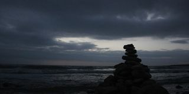
Follow herCredit unknown- Washerwoman end 1Photo by Rachael Ren on Unsplash
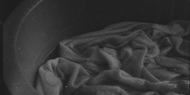
Washerwoman end 2Photo by Matheus Vidal on Unsplash- Washerwoman end 3Photo by Pear on Unsplash
- Washerwoman end 4Photo by Vitaliy Rigalovsky on Unsplash
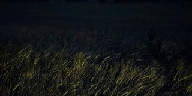
Washerwoman end 5Photo by Artur Oliinyk on Unsplash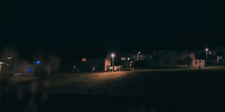
Washerwoman end 6Photo by Winston Tjia on Unsplash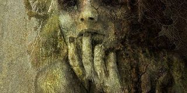
Birch girl cover cardCredit unknown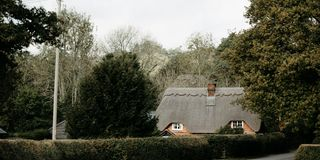
Birch girl openingPhoto by Annie Spratt on Unsplash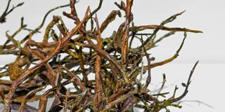
Ask her for helpPhoto by Seungwon Park on Unsplash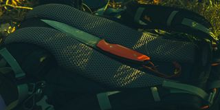
Take without askingPhoto by Roman Dolgikh on Unsplash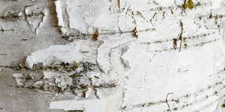
Cut freePhoto by Rayia Soderberg on Unsplash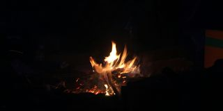
Run awayPhoto by Bunsim San on Unsplash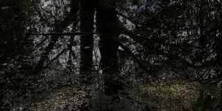
Help herPhoto by John Crix on Unsplash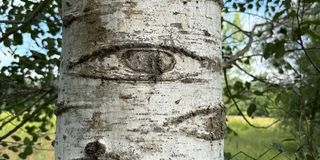
Beg to go freePhoto by Tracy Brower on Unsplash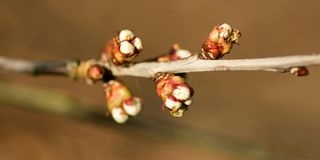
Take what is offeredPhoto by Ingo Doerrie on Unsplash- Some to sparePhoto by Max Kukurudziak on Unsplash
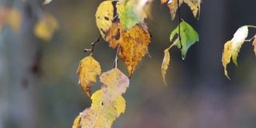
Birch girl end 1Photo by Magdalena Sołtysiuk-Krus on Unsplash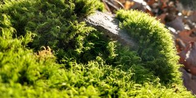
Birch girl end 2Photo by Lester Hine on Unsplash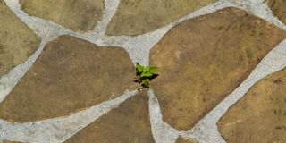
Birch girl end 3Photo by Hilda Trinidad on Unsplash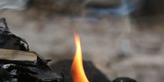
Birch girl end 4Photo by Mengkol Smile on Unsplash- Birch girl end 5Photo by Steph Quernemoen on Unsplash
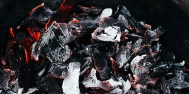
Birch girl end 6Photo by Ameen Fahmy on Unsplash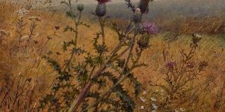
Dictionary cover cardCredit unknown